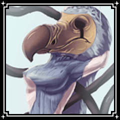
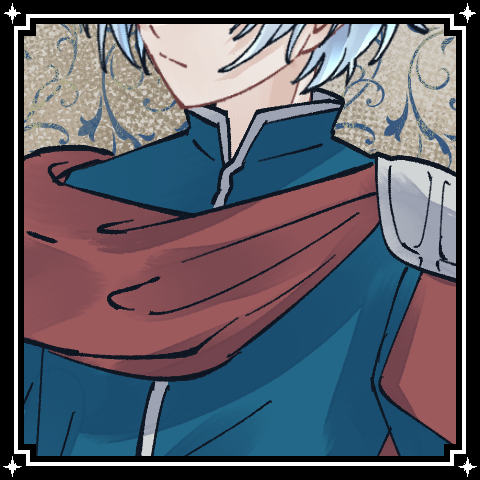
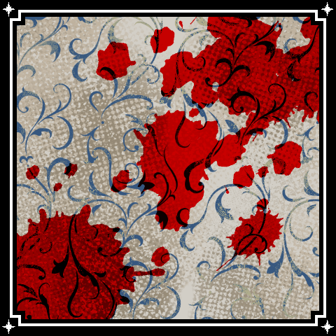

＊
きみが目を醒ましてから100年の月日が流れました。
＊
兎は落下し、猫は干乾び、帽子は裂け、女王は壊れ、
大いなる暴力と死が、堕落した国に降り注ぎます。
＊
Dead or AliCe
“It Happens All The Time.”
＊
そうして、読み終えたか終えないかのうちに……。
＊
カリナ、あなたは茫漠とした荒野に放り出されていた。
カリナ
自身に届けられた誰かの声は、いつもはどんな語り口だったっけ？
カリナ
ただひとつわかるのは、
今回届いた「拝啓アリス」という滑り出しを、
己が初めて見たということ。
カリナ
それがたぶん、柄にもなく、胸の鼓動を騒がしくしたということだ。
カリナ
そうして、今。
キョトンとした顔で周囲を眺めている。
カリナ
……？？どこだろう。転送でもされちゃったのかな。
そんな顔で。
＊
びょうびょうと風の吹く荒野は、砂煙で見通しが悪い。
＊
ようく目を凝らせば、向こうに建物の影が見えるような、見えないような……。
＊
そんな不明瞭な視界の中で、少しずつ大きくなるものがある。
＊
向こうもこちらに気づいたのか、近づく速度が速まり、どんどん大きくなる。縦長、ヒトと同じ形。
カリナ
見通しの悪い視界を、それでも目を細めてじぃと見つめる。
……ひとだ。
「はぇ」
変な声が飛び出る。だって話しかけられると思わなかったから──いや、人間なんだから話しかけてこられても不思議ではないのか。
ユリス
その男は、剣の柄に手をかけて鋭くあなたを見つめる。
カリナ
「…………えと」
自分の身分を証明するもの。何かあったろうか。
そもそも、この人に自分は身分を明かしてもいいのだろうか。
ぺたぺたぺと、と自分の身を手で探る。
カリナ
「……んむ？」
開いた手紙でもあれば、と思ったのだけれど
指がとらえたのは、不思議な…硬貨、だろうか？
＊
チャリ、と金属の擦れ合う音がする。
それは不思議と心地よい冷たさを以て指先をもてなした。
カリナ
あった。手紙と硬貨を片手ずつに持ち、眼前に掲げる。
「えっと。わたし……んん、ぼく？
んと……アリス、さん。です？」
カリナ
自己紹介のつもりだったらしい。
「…………あなた、は？」
ユリス
「……ユリスだ。おまえ、アリスというのは本名がか？ それとも手紙に書いてあったものをそのまま言ったか？」
カリナ
「拝啓アリスって言われていたので、そうなのかなって」
いらえは、書かれていたのでそのまま言いましたと。
ユリス
「その手紙の“アリス”というのは、役職名のようなものだ。その手紙が来るより前から呼ばれている本名は？」
ユリス
「カリナ。……その分だと何も知らないようだな。名前ひとつ訊き出すのにこうも手間取るとは」
ユリス
「残念だったな、カリナ。おまえは今よりこの最低な世界を歩むほかない」
カリナ
首を傾げた。
『救世主』とは、なるほど御大層な役割だ。
世界を救えるだなんてこれっぽっちも思ったことがないものだから。
ユリス
「腕に自信がないか？ なら余計に哀れだな。他に数多居る“救世主”の糧として殺される他ないのだから」
カリナ
じっと眼前の者を見つめた。
この人は、色々と話をしてくれる。
カリナ
「はい」
挙手をします。質問がある時にはそうした方が、比較的話を聞いてもらえると知っています。
カリナ
ありがとう。発言をします！
「ここは、『救世主』が必要なくらい『最低な世界』ということですか」
「ここでは、『救世主』が沢山いるんですか」
「沢山いる『救世主』が、糧を探して誰かを殺して回っている状態ですか」
「あなたは、『救世主』ですか。『救世主ではない人』ですか」
ユリス
「最初から順に、はい、はい、いいえ、救世主、だ」
カリナ
端的な回答。すごい。きっとあたまがいいひとだ。
ユリス
「ここは最低な世界だ。救世主は必要だろうな」
「そしてその救世主は沢山いる」
「だが、誰かが明確な目的を持って殺し回っているわけではない。このことは後ほど説明する」
「そして俺も救世主の一人だ。手紙とコインを受け取り、この世界に堕とされた」
カリナ
堕とされた。ということは彼も突然世界の風景が変わったんだろうか。
…元居た世界ではおとぎ話の王子様だったりしたのかなあ？
（綺麗なおかんばせだったから……）
カリナ
ときおり思考がわき道にそれながらも、
じっと彼を見つめて話を聞いている。
＊
と、そのとき。
ざ、ざ、と足音が近づいてくる。
＊
砂埃の向こうから現れたのは、一人の少女。
服はボロボロで、目は血走っている。
発狂した救世主
「やっぱり……！ あなたたちも救世主！？」
発狂した救世主
「じゃあ裁判をしないと！ 裁判を！」
発狂した救世主
「わたしが間違ってるわけない！ わたしが救世主よ！ 正しい救世主！」
発狂した救世主
少女は剣を振り上げる。
話を聞く様子ではない。
ユリス
舌打ちをひとつ。
「……既に発狂しているか」
ユリス
「ちょうどいい。この世界の理を教えるいい機会だ」
ユリス
「死にたくなければ、あいつを倒すぞ。
なんでもいい、お前の使える力を使って」
ユリス
「そうでなければ、何も分からないまま殺されるだけだ」
カリナ
「あ、発狂ってことは普通は皆ああいう感じではないんですね……
そりゃそっか」
カリナ
大丈夫、大丈夫。
いつでも戦えるように、身体をいじってもらったんだから。
＊
この裁判はチュートリアルです。裁判の流れを確認していきましょう。
＊
裁判は二つ以上の陣営に分かれて戦います。
今回は……まあ、今のところユリスとカリナさんは敵対していませんよね？
カリナ
一緒に戦ってくれる！とキャラクターは思っていると言います
＊
よろしい！ ユリスもあなたを守って戦う気です。
この二人は同じ陣営、そして発狂した救世主は別陣営となります。
＊
技能『仕込』、日刻みの時計などはここで使うのですが、今回は使わない感じで行きましょう。
＊
行動順を決めるための先制値は、1d6+{才覚}で算出します。値が大きい人から先に行動、同値になった場合は同値同士で値が違うものになるまで振り直して決めます。
＊
チャパレに入れたと思ったら入ってなかった。「1d6+{才覚}」をコピペしてもろて……
ユリス
1d6+0 (1D6+0) ＞ 1[1]+0 ＞ 1
ユリス
能力値をパラメータに入れてないわよぉ～～～～～～～～～～～～ん！！！！！！！！！！！
＊
えー。右上の顔マークからマイキャラクター一覧を開いてですね、少し下にスクロールしてもらって、「パラメータ」というところに5つくらい並んでると思うので、キャラシのデータに合わせて値を入れてもらえますか……。
カリナ
ちなみに、パラメータの「威力」は
1d6+2等の可変の情報もそのまま入力で大丈夫でしょうか？
（必要なコマンドというか代入式があるかどうかを把握しておらず）
＊
ありがとうございます！ それでは「1d6+{才覚}」をコピペしてもらうと先制値いけると思います……！
カリナ
1d6+0 こうかな？ (1D6+0) ＞ 3[3]+0 ＞ 3
ユリス
そしてユリスはさっきパラメータを入れ忘れていたのですが、1+才覚で合計4です
発狂した救世主
1d6+0 (1D6+0) ＞ 6[6]+0 ＞ 6
＊
発狂した救世主＞ユリス＞カリナ の順に行動します。
＊
キャラクター設定のイニシアティブというところに値を入れてもらうと左のステータス一覧のところが並び代わって便利！
＊
開始時の諸々はこれでOK！ では、ラウンドを始めていきます。
[ ＊ ] ラウンド : 0 → 1
＊
行動する順に、山札から5枚カードを引きます。
引いたカードは、自分のデッキシートに並べていきます。
＊
……と、こんな風に引いたカードをログに残していく文化でやっとります。
s=スペード、c=クラブ、d=ダイヤ、h=ハートの略字です。
＊
あ、引いたカードはもう一度ダブルクリックすると全体に公開されます！ そのままだと自分しか見れないので……！
＊
手番では、補助動作（青）を先にして、主動作（赤）を1回！ という順。
発狂した救世主
みたいな感じで、使うトランプと使う技能をログに残しておくと見返したときに何が起こったか分かりやすい！
発狂した救世主
ちなみに「＊」はシステム的宣言をするときにつけてます。ロールや雑談との区別だね。
発狂した救世主
＊h4 hK捨て 次回ダメージ+2（鋭気込で+5）
＊
大ダメージが来てしまう！ そんなときに……カリナさん、あなたは足掻くことができます。そう！ 「遊撃」！
＊
（本来ならユリスが妨害で割り込むべきところなんですけど、なんと今回妨害を引いてないので……ばかやろう……）
カリナ
花を持たせてもらってます 行くか…「遊撃」…！
＊dK 遊撃 こうかな？
＊
遊撃は猟奇で判定、成功すればダメージと、相手の判定に1d6点のマイナス補正をつけられます！
カリナ
ふんふん
[対象：判定中キャラクター] 誰かの判定前に割り込み。【猟奇】で判定し、成功すれば【猟奇】点のダメージを与え、次に行う判定の達成値を1D6減少する。
カリナ
2d6+3=>7 判定（＋猟奇） こうかな (2D6+3>=7) ＞ 5[4,1]+3 ＞ 8 ＞ 成功
＊
さてダメージは猟奇点なので3点……と、思いきや。
＊
実は、心の疵が両方抉れているとき、裁判では常に受けるダメージが1点上がります。
＊
更に、この発狂した救世主は「逆鱗」という、与えるダメージと受けるダメージが〔状態●の心の疵〕+1点増加する装備技能を持っているので……
＊
さらに+3点されて……合計3+1+3の7点！！！！
[ 発狂した救世主 ] HP : 9 → 2
＊
さて、では改めまして兇刃の判定に戻り……-1d6点の補正がつくぜ！
発狂した救世主
2d6+3-1d6=>7 判定（＋猟奇） (2D6+3-1D6>=7) ＞ 11[5,6]+3-2[2] ＞ 12 ＞ 成功
発狂した救世主
というわけで、えーと、あっ宝物欄作ってなかった、この人は上質な凶器（威力1d6+2）を持っていて、殺意（+1）と逆鱗（+3）がついており……
発狂した救世主
1d6+2+1+3+2 ダメージ（＋殺意＋逆鱗＋兇刃） (1D6+2+1+3+2) ＞ 5[5]+2+1+3+2 ＞ 13
カリナ
な、なぜそのように…発狂を…（世界の無常を見ています）
＊
さぞ優秀な救世主とお見受けする……になっちゃった
＊
というわけで、カリナさんに13点のダメージが……行きます！！！！
[ カリナ ] HP : 18 → 5
カリナ
グワーッ
戦いとは…こういうものだった…ッ！！（ごろごろ転がって起き上がるようす）
ユリス
2d6+3+1d6=>7 判定（＋才覚） (2D6+3+1D6>=7) ＞ 7[3,4]+3+3[3] ＞ 13 ＞ 成功
[ 発狂した救世主 ] HP : 2 → 0
＊
こうして発狂した救世主のHPが0になりました。
しかし、まだ終わりではありません。
HPが0になると、「判決」をします。
＊
「2D6＋脅威度－前科（判決表の使用回数）」で 酌量を求め、この酌量の値が大きいほど軽いやけどでよかったね～（復帰）になります。
判決表
1ゾロ 死刑！キャラクターは〈死亡〉する。
～2 ランダムな能力値で判定し、成功すれば〈昏倒〉する。失敗すれば〈死亡〉する。
3～5 〈昏倒〉する。
6～8 ランダムな能力値で判定し、成功すればHPを1点回復して立ち上がる。失敗すれば〈昏倒〉する。
9～11 HPを1点回復して立ち上がる。
12～ 無罪！HPが0となる際に受けた不利な効果を無効とし、HPは0になる前の値に戻す。前科は増える。
＊
ああっ情報タブの分で二回流れてる ともあれ、これを……振るぜ！ チャットパレットに「判決表」と入れると計算式が出てきます！
発狂した救世主
2d6+1-0 判決表 (2D6+1-0) ＞ 7[6,1]+1-0 ＞ 8
発狂した救世主
6～8 ランダムな能力値で判定し、成功すればHPを1点回復して立ち上がる。失敗すれば〈昏倒〉する。
発狂した救世主
Choice[猟奇,才覚,愛] (choice[猟奇,才覚,愛]) ＞ 愛
発狂した救世主
2d6+0=>7 判定（＋愛） (2D6+0>=7) ＞ 6[3,3]+0 ＞ 6 ＞ 失敗
＊
カリナに思い切り剣を叩きつけた救世主は、割って入ったユリスの剣によって致命傷を食らう。
発狂した救世主
腱を斬られた救世主は、乾いた地面に放り出され、藻掻く。
発狂した救世主
「いやだ、嫌……！ どうして……私は間違ってなんか……」
ユリス
「この国では害そうと思って害する救世主は思ったよりは多くない。それでも殺し合う。殺し合わなければいけないんだ」
ユリス
「リミットは、30日に一度。こうして――」
ユリス
「……一人以上、殺す。これが俺達の『責務』だ」
ユリス
「乾いた大地。摩耗した民。腐敗した国。殺し合う責務」
カリナ
「ユリスさんは……」これまで何人ほど、と問おうとして口を噤む。
「……戦いが上手な人なんですね。助けてもらったので」問いの形を直した。
ユリス
「これからの30日、町に居ればどこかしらで次の『糧』に出会えるだろうからな」
カリナ
「はぁい」
いいひとでもないのなら、得体のしれない娘の話を親身に聴くのは、つらかろうに。
そう思いながらも、自分は彼の背を追って歩き出すだろう。
＊
次第に町の影ははっきりとして、そこにひとびとの住んでいるのが見えてくるだろう。
＊
お茶会は、直にきたる争い「裁判」に備えて行動するステージです。
＊
敵対者への牽制であったり、仲間との励まし合いであったり、強くなるための特訓であったりと、その内容は多岐にわたります。
＊
このステージでの行動がどれだけ成功したかによって、裁判の有利不利が決まります。
空気を読み、心の疵を舐めあい、抉りあい、己の優位性を存分にアピールしましょう。
＊
お茶会は、基本的には2ラウンド行われます。
PCは一人2手番ずつ、という感じですね。PKはまた違う感じで行動数が決まるのですが今回は割愛。
＊
ここでできることは4つです。
・空気を読む（技能の入れ替え）
・小道具の調達
・心の疵を抉る
・心の疵を舐める
＊
「空気を読む」「小道具の調達」は1セッションに付き1人一度まで試みることができます。
どちらも好きな能力値で判定し、成功すれば「空気を読む」ではデッキのなかの1つの技能を入れ替え、「小道具の調達」では〔所持する六ペンス/2〕までの価値の小道具の入手ができます。
＊
どちらも強力ですが、これらは所謂サブの行動……メインはやはり、「心の疵」に関するものです。
＊
心の疵を抉る/舐める行動は、自身以外のキャラクター一人を対象として、好きな能力値で判定します。
成功した場合、対象の心の疵のうち好きなひとつを悪化させる（●/ココフォリアのステータス上では-1）、または回復させる（○/ココフォリアのステータス上では1）ことができます。
＊
これに対して、対象の仲間（今回のセッションは、特別に対象自身でも）は邪魔を試みることができます。これを「横槍」といいます。
＊
横槍は、成否にかかわらずHP1点をコストとして減少させます。
そして、ランダムな能力値で判定し、成功すれば1D6点分のマイナス補正を相手につけることができます。
＊
相手の心の疵に触れて掻き回しましょう！
そして、自分の心の疵を守るために足掻きましょう！
＊
では、お茶会に至る状況を簡単にロールプレイしたのちにやっていきましょう。
＊
ユリスがカリナを連れて辿り着いた先は、小さく素朴な町だった。
＊
そこには、兎や猫の耳が生えたり、鳥の羽根が尾っぽについていたり、あるいは派手な帽子をかぶっていたり……そんな人々が集まって暮らしている。
＊
「その方は誰です？ 末裔にしては……」
「新しい救世主様ですか？」
ユリス
「そうだ。近くで拾った。
まだ来たばかりだ。責務を果たすまでここで面倒を見てもらえるか」
＊
「ええ、もちろんですとも！ 救世主様とあらば」
＊
「ささ、ちっぽけな町ですが部屋を用意しましょう。新しい救世主様、おなまえは？」
カリナ
先程の流れを思い出し、ちらとユリスの背を見る。
「カリナ、です」
カリナ
ほめらりた、…のだろうか。すこしくすぐったい気持ちになる。
＊
白い兎の耳を持った住民が、カリナを案内する。
カリナは小さな家々のひとつに通された。
＊
清潔ながら粗末なベッド、油が尽きかけのランプ。
決して良い暮らしではないのだろう。
カリナ
移動……。するのが正しいのかな？
ユリスや周囲の者らの顔色を見て、ついていく。
「わあ」
＊
あるいは、それすらも贅沢だと思うような環境に居た救世主も、居るかもしれないが……。
カリナ
「えと。ありがとうございます」ぺこりとご挨拶をしましょう。
＊
「いえいえ、なんてことないですよ。ゆっくりしていってくださいね」
＊
朗らかな笑顔と共に、白兎の住民はあれこれと備品の場所を教えてから去っていった。
＊
夕方になって、曇り空が不気味に赤くなれば、クズ野菜のスープと硬いパンが。空が暗くなった後に、また薄明るくなって、朝になればまた同じような食事が出てくる。
＊
こうして、あなたの30日間の生活が始まったのだ。
＊
さて、そろそろゲーム的な処理もしていきましょう。
手番の順番ですが、先がいい、後がいいなどの希望はありますか？
＊
このゲームだとまあ……基本的には後手が有利かも。相手の手を見て考えられますからね。
カリナ
初めての動作でもあるので、
先に行っていただくのを見てから自分も行動してみるという形で、
おことばに甘え、後手を選んでみようかな…？という気持ちはあります
＊
そうですね！ まずはお手本を……見せちゃいますか！（腕ぐるんぐるん）
＊
判定とロールプレイの順番は好きにしてかまいません。先に判定して結果を見てからの方がロールしやすいという人もいれば、先にロールして気合を入れて振る！ という人もいます。
＊
あ！ そういえばHP戻しましょう！ ゆっくり休んで回復したということで！
[ カリナ ] HP : 5 → 18
カリナ
わーい！ありがとうございます！
プロローグ→お茶会の間で回復する、といった認識でしょうかね
カリナ
感謝ッッ HPはだいじだということがチュートリアルで実感しました（？）
＊
というわけで、横槍を入れてもらっても、そのまま判定の結果を受け入れます……でもどちらでも。どうしますか？
＊
OK！ では、ランダムな能力値を出すためにChoiceを振りましょう。チャットパレットに猟奇・才覚・愛のchoiceが入ってると思います
カリナ
Choice[猟奇,才覚,愛] (choice[猟奇,才覚,愛]) ＞ 才覚
カリナ
2d6+0=>7 判定（＋才覚） (2D6+0>=7) ＞ 7[1,6]+0 ＞ 7 ＞ 成功
＊
成功！ えらい！ 1D6を振って効果量をどうぞ。
カリナ
はーい！ ヤリイカ…を…持っているな…
これはこの場で使用宣言をする形でしょうか？
＊
あ！ そうですね！ 今か、効果量を振った後かどちらでも！
カリナ
1d6
では先に判定から (1D6) ＞ 1
カリナ
ヤリイカ[3] 自身が横槍の効果量を決定したときに割り込み。横槍の効果量が2増加する。この効果は他のヤリイカ系小道具の効果と累積しない。
ユリス
2d6+3-3=>7 判定（＋才覚－横槍） (2D6+3-3>=7) ＞ 6[3,3]+3-3 ＞ 6 ＞ 失敗
ユリス
悲しいですが、では、舐められなかったロールをします……
カリナ
少しだけ雛鳥ムーブを差し挿ませていただきます…（？）
カリナ
ユリスの顔を見るとすぐ彼に寄っていった。
彼の顔色を見ながら、その後ろをくっついていくように歩く。
ぴょこたんぴょこたん。
カルガモの雛が親へついて歩く様子を揶揄されることもままあるが、様子としては少し似ていたかもしれない。
カリナ
え゛、と微かに表情が崩れる。身体に傷を負ったときに似た顔だ。
「ついてこられるの…あんまり…おすきでない…？」
ユリス
なんと言ったらいいのか、ぐるぐると頭の中で思考が回る。
カリナ
説明に思考と時間を割いてくれる彼をじっと見つめている。
ユリス
末裔というのは、この世界に元からいる住人たちのことである。以前に教えた。
カリナ
勝手に動くと統率が崩れるし、作戦に影響が出てしまうこともあるから、あんまり自分での判断をしたことがない。
でも、内紛で命令通りに動いていたら逆に壊滅した隊もあったし。
彼の言っているのもそういうことなのだろう、たぶん。
カリナ
「ユリスさんは、手伝って喜ばれたことがあった？」
喜ばれるのを知っているということはそうかなって
ユリス
「ああ。救世主は六ペンスコインの力もあって一般的な末裔よりは様々な力があるからな」
ユリス
「まあ……手伝って嫌がられることもそこまではないだろう」
ユリス
悪徳救世主の圧政に遭った村なんかには、たまにあるが。
ユリス
ここはそんなこともなく、比較的平和な場所だった。
カリナ
「人のお役に立ってきたんですね」
だから皆さんあなたの顔を見るだけでお話しに来てくれるんだ、と合点のいった顔をする
＊
末裔たちはユリスの顔を見るとわらわら集まってくるし、ユリスが連れてきたカリナにもにこにこ集まってくる。人望が窺える。
カリナ
いいひとなんだなあ、と眺めている。
「ぼくもしてみます」むん できるかな？まあお部屋のお礼くらいはね。
ユリス
「俺に面倒を見られるばかりではひとりでやっていけないぞ」
ユリス
本当は、屋敷の池に居た鴨の雛のことも好きだった。
カリナ
はーい！では自分も…
＊ユリスさんの疵「てのひらの温度」を【猟奇】で舐める
にしようと思います
ユリス
Choice[猟奇,才覚,愛] (choice[猟奇,才覚,愛]) ＞ 猟奇
＊
あっ そういえば横槍のコストのHP1点を減らしてない
[ カリナ ] HP : 18 → 17
[ ユリス ] HP : 15 → 14
ユリス
2d6+0=>7 判定（＋猟奇） (2D6+0>=7) ＞ 7[4,3]+0 ＞ 7 ＞ 成功
カリナ
ティーセット…己に…ある（指さし確認）
＊疵を舐める判定にティーセットを使用します
カリナ
ティーセット[3] お茶会中、自身の判定前に割り込み。次の判定の達成値が2上昇する。
カリナ
2d6+3-3+2=>7 判定（＋猟奇－横槍＋ティーセット） こうかな？ (2D6+3-3+2>=7) ＞ 7[3,4]+3-3+2 ＞ 9 ＞ 成功
カリナ
ユリスさんやさしいねという話をしていきたいと思います（事前報告）
カリナ
やってみろ、自立しろと繰り返し自分に伝える彼をじっと見つめる。
カリナ
「そう？
……じゃあ、お互いに『やさしい』の意味とか、条件とかが違うのかな」
カリナ
ついてきてほしくないだけなら、ただ突っぱねるだけでいい。
つらいわけではない、いやというわけではない、と答える必要もなかった。
いいや、そもそも、
カリナ
「あなたは見ず知らずの子供が放り出されているのを無視して、ねぐらに帰ってもよかった」
カリナ
「話しかけなければ、世話をする必要も、ついてこられる面倒もなかった」
カリナ
「それでもあなたは話しかけて、他の者が気にかけてくれるようとりなす」
ユリス
黙って聞いている。
聞いているうちに眉根が寄っていた。
不快ではない、のがまた悩ましい。
カリナ
「えへへ」
やさしいひとだ。そうやって返す言葉が刃の形をしていないところがまた。
カリナ
あなたの行為は、好い影響を与えるものだったと、
どのようにして伝えたらいいのかを自分は知らないけれど。
カリナ
人にとって「良いもの」であろうとしているんだろうなと、彼に対して思っている。
ユリス
それが意識してのことなのか、はたまた無意識なのか。
ユリス
ともあれ、指摘されることは好んでいないようで、腹いせのように歩く速度が速まったのだった。
[ ユリス ] てのひらの温度 : 0 → 1
＊
そうして、質素ながら穏やかな日々を過ごして、15日目。

Charlotte
巨大な、ドードーのかたちをした、“なにか”。
Charlotte
それがゆっくりと、町を横切っていた。
＊
その怪鳥が通った後には、ひとびとがもだえ苦しみ、血を吐き、衰え、死んでいく。
＊
その霧に包まれた者は、誰もかれもが死していった。
＊
ユリスとカリナの面倒を見ていた、顔見知りの末裔が慌ててやってくる。
白兎のかれだ。
＊
「こうなってはもう私たちはおしまいです。でもあなた方は違う」
＊
「今ここで、無為に絶やされるべきいのちではありません。なにせ、救世主様なのですから」
カリナ
これがどの程度「ふつう」のことなのか分からないから、口を噤んでいる。もとより自分は正常な判断を行うことはできない。
『お手伝い』はろくにできていないのも確かだ、けれど。
ユリス
歯を食いしばり、徐々に近づいてくる亡者を見る。
ユリス
今の実力では勝てないことは確かだった。あれに挑むなど、正気ではないと本能が告げていた。
ユリス
白兎の末裔に絞り出すように感謝を告げ、馬に飛び乗る。
カリナ
ちなみに白うさぎの彼を抱えていけるだけの馬の余裕は
（なさそう）
カリナ
じっと白うさぎの目を見つめ
「ありがとうございました。お部屋、清潔にしていただいてて嬉しかったです」
＊
白兎の末裔は、震えながらにこりと笑った。
「光栄でございます、救世主様」
カリナ
こくりと頷き馬に乗りましょう。
機会があれば、また今度。地獄とかで。
ああいえ、ここが地獄だと言う話でしたね。ともあれ
ユリス
カリナを馬上に引き上げ、手綱を操る。
馬は嘶いて駆け出した。
Charlotte
迫る黒い霧。
それを振り払うように馬は駆けていく。
＊
町には、断末魔の叫びがこだまして、そうしてじきに静かになった。
＊
黒い霧の上がる方、ドードーの亡者がやってきた方には当然行けない。
＊
あの亡者は、何も真っ直ぐ来たのではない。
本能か、狂気か、何かの赴くままに蛇行して、周辺の村々を滅ぼしてきたのだと。
＊
この周辺には、まともな町や村は残されていなかった。
＊
それは、荒野で長く彷徨うことを意味すると同時に――他の救世主を探す宛てがなくなったことも意味していた。
＊
希望があるならそれに従いますし、特にない場合はダイスを振って決めましょう！
カリナ
はーい！今度はダイスを振ってみたいと思います
ダイスを握るのはたのしいから…（？）
＊
OK！ では1d100で大きい方が先ということで！
カリナ
1d100 はーい (1D100) ＞ 34
ユリス
＊カリナの疵「実験動物」を……才覚で、舐めます
カリナ
んん いれてみましょう
＊疵を舐める判定に横槍
＊
HPを1減らして、ランダム能力値判定をどうぞ！
[ カリナ ] HP : 17 → 16
カリナ
Choice[猟奇,才覚,愛] (choice[猟奇,才覚,愛]) ＞ 猟奇
カリナ
2d6+3=>7 判定（＋猟奇） (2D6+3>=7) ＞ 8[5,3]+3 ＞ 11 ＞ 成功
ユリス
＊ティーセット使用 少しでも……打ち消す！！！！
ユリス
2d6+3+2-6=>7 判定（＋才覚＋ティーセット－横槍） (2D6+3+2-6>=7) ＞ 8[5,3]+3+2-6 ＞ 7 ＞ 成功
ユリス
気合の勝利だ……では、ロールをしていきます
ユリス
一度、馬から降りて休憩する。
荒れ果てた大地でまともに休めもしないが、どうにか岩陰を見つけて座り込んだ。
カリナ
周囲をせわしなく見やりながら、ちょこんと腰を下ろす
ユリス
「……干し肉を食べよう。水はあと少ししかないから、一口ずつだ」
ユリス
馬に括りつけてある荷物。次第に軽くなるそれから、干し肉のかけらと水筒を取った。
ユリス
硬く塩気のある肉片を齧りながら、フと呆れたように笑う。
ユリス
「カリナの力が、食料を出すものであったら良かったな」
ユリス
六ペンスコインは、心の疵を源として不思議な力を生み出す。
ユリス
ユリスは単に剣術に優れているほか、冷気を操ったりして、町では食料の保存期間を延ばしたりしていた。
ユリス
カリナは町にいる間に自分の力を見つけただろうか、それとも未だ分からないままだっただろうか。
ユリス
どちらにせよ、それがこの状況を打開する秘策になればと……ユリスはありもしない夢を描いたのだった。
カリナ
彼の様子に疲れを感じる。
そりゃあ、勿論、そうだろう。
カリナ
徐々に減っていく糧。人と話すこともできない荒野。
カリナ
心をじりじりと削っていくそれは、どんなに目の前が拓かれていようとも、
未来が見えないという意味で、閉鎖された空間と同じだ。
カリナ
……未来が見えない閉鎖された空間。
自分がかつて収容された施設を思い返す。
自分は、他のみんなは、どう過ごしていたんだっけ。
カリナ
「食料……」と、眼前のユリスがこぼした言葉を繰り返す。
カリナ
「…………」思案から意識を戻し、眼前の彼を見遣る。
ユリス
普段からあまり動かない表情筋は、変化がないようでいて、どこか疲れをにじませている。
ユリス
だが同時に、諦めきれない希望を宿してもいた。
ユリス
彼の頭は、今この時も、生き延びる術を探している。
カリナ
綺麗なかんばせを見つめながら、
彼は、独りでいるための人ではないな、と感じる。
人々が集まっていた人望を思えばわかることだけれど
きっと彼は誰かの傍にいて、誰かを助け、誰かをまとめる形に整えられたひとなのだ。
カリナ
そのために、生きながらえることを求められるひとで、それに応える人なのだ。
先日の、白うさぎに対してそうだったように。
カリナ
「血とか腕とかなら、お渡しできるかも？
少し休んでいてもいいですよ、お口に入れますから」
カリナ
言いながら、鉈かナイフか、人の身を切ることのできる刃物を探す。
ユリス
その言葉の意味を理解するのに一拍を要した。あるいは、一拍しか要さなかった。
カリナ
身体をいじくられるのは慣れていたし。丈夫でもあるし。
「肉質とかおすきでない…？」
ユリス
そんなものを差し出させるわけにはいかない。
道徳心が叫んでいるのが分かる。
だが同時に、“貴重な糧だ”とも、頭は理解していた。
ユリス
「今更……好き嫌いなど、する気もない、が」
ユリス
「……、……」
口を開いては閉じて、何かを迷い。
ユリス
「すぐに止血できるようにしないと困るだろう」
カリナ
「服とかがあるので…？処理にも慣れてます」
ユリス
閉口する。普段ならもっと強く拒否し、叱責していたであろうことが、今はできない。
ユリス
せめて、と、自分のマントを千切って差し出した。あまり汚れていないところを。
カリナ
・・・・・・・・・・・・
「ちょっと人の糧になるだけです。
怖いことはなんにもないですよ」
カリナ
その結果身体がどうこうなるだけだ。
相手のために自分を削る方がいいと、学習した経験が確かにある。
ユリス
それを正さねばならないのだろう。だが、今はそんなことをしていては死んでしまうのも確かで。
ユリス
「……俺の分の干し肉の残りはおまえが食べるといい」
ユリス
そんなもので釣り合うわけがないのに、せめてもの罪悪感の軽減に、差し出す。
カリナ
やがては命のこぼれる臭いがぱっとひろがるだろう。
生ぬるい「糧」が少しばかり増えるまで、そう時間はかからなかった。
カリナ
自分がひとの口に物を運ぶの、親鳥が雛鳥の口に餌を押し込むときみたいだな、となんとなく笑った。
ユリス
差し出された、血のにおいと肉と。
それを口にする。あーん、と、雛鳥のように口を開けて。
全く倒錯的な光景だった。
ユリス
咀嚼すると血の味が広がった。
どこか甘いような気がした。
[ カリナ ] 実験動物 : 0 → 1
カリナ
＊ユリスさんの心の疵『統率者たれ』を舐める で
[ ユリス ] HP : 14 → 13
ユリス
Choice[猟奇,才覚,愛] (choice[猟奇,才覚,愛]) ＞ 愛
ユリス
2d6+0=>7 判定（＋愛） (2D6+0>=7) ＞ 5[4,1]+0 ＞ 5 ＞ 失敗
カリナ
2d6+3=>7 判定（＋猟奇） はーいっ (2D6+3>=7) ＞ 12[6,6]+3 ＞ 15 ＞ 成功
＊
えーと、お茶会でのスペシャルは、〔自身の所有する六ペンス／2〕までの価値の小道具を1つ入手します。
＊
まあちょっと今すぐ決めづらいぜという場合は裁判開廷時にまた訊きます（忘れてませんように） 今決めてもいいです
カリナ
ここでの「自身の所有する六ペンス」とは、元々あった数（今回の場合10）からキャラクター作成時に色々持った小道具などを差っ引いた数でしょうか
＊
あ！ いえ、六ペンスコインは小道具を入手しても消費されません。今の所持コインは10枚の換算で大丈夫です！
カリナ
10つかえる！すごい ありがとうございます
では今回の場合は5までの価値ということか…
＊
これから裁判なので、裁判に使う道具がいいですね 日刻みの時計、おくすり、水パイプ、こしょう……
＊
インクつぼはファンブルしないとつかわないのですが、兇刃があるならそれも手かも……？
＊
けっこうどれもこれも致命的なので、基本はファンブルしたら表を振る前に対処するということが多いですね
カリナ
ありがとうございます！＞情報
すみません、インクつぼの記載場所を確認できませんでした
今は「日刻みの時計」にしようかなーと感じております
＊
ア！ も、もしかしてこれサプリのアイテムなのか（有料サプリ設定ONにしてるから……）
カリナ
なるほど！こちらの異常とかでなければよかったです＞インクつぼ
では日刻みの時計を頂戴します！よろしくお願いいたします
カリナ
ユリスの口元に肉片や血を押し込みながら、ときおり自分の肉を自分で咀嚼している。
カリナ
「ユリスさんは頑張り屋さんですねえ」と独り言ちた。
カリナ
「人のためにがんばっているんだなって…？」
ユリス
「いや……意味は分かるが。子供じゃないんだぞ……」
カリナ
「うん、そう頑張るように整えられてきたんだろうなって思いました」
カリナ
「だから、自分が生き残らないといけないとき、
あなたはそれが優先できます」
カリナ
「誰かを死なせることが分かっていても撤退を選べるし」
「肉を勝手に口にねじ込まれても文句を言わないでくれる」
カリナ
この人は目の前のものを無視できない性分であるようだから、たぶん、時にはつらかろう。
カリナ
「あなたは正しいですよ、間違ってはいない」
ユリス
その言葉は、乾いた土にしみこむ水のようだった。
ユリス
否応なく心の中に安堵が広がるのを感じる。
それに屈してはならないとも思うのに。
ユリス
こうして少女の血肉を貪るなんて、とても正しいことではないのに。
ユリス
「……、」
疲れからか、反論も思い浮かばない。
ユリス
ただ、頷くようにして与えられた肉を飲み込んだ。
ユリス
それは疵を癒し、力を与えるだろう。本来ならば。
ユリス
棘を飲み込んでしまったような、言いようの知れぬ不安を感じてもいた。
[ ユリス ] 『統率者たれ』 : 0 → 1
＊
それを確かめ切ったのは、29日目のことだった。
＊
亡者が蹂躙した村の跡地に辿り着いて、ユリスは、倒壊しかけた小屋で眠ろうと言った。
＊
分厚い雲に覆われた空が薄ぼんやりと明るくなったとき、ユリスはカリナを村の広場だった場所へ連れ出した。
ユリス
ボロボロのマントで剣を拭いて、振り返る。
どこかさっぱりとした顔をしていた。
ユリス
「馬はあの小屋の裏に繋いである。
この村の食糧をかき集めて食べさせれば、あと20日くらいは走れるだろう」

ユリス
そう言って、呼吸と同じくらい当たり前に、カリナに剣を向けた。
ユリス
「裁判だ。どちらか生き残った方が、あの馬に乗ってもっと遠くの街を目指そう」
ユリス
「そうすれば、どちらかは生き延びられるだろうから」
カリナ
きょと、とした顔は、続く彼の言葉によってすぐに合点のいった表情に変わった。
カリナ
「いえ、…ああいや、はい。勿論そちらもそうなんですが」
カリナ
「『俺が生き残ろう』ではなくて、『どちらかは』生きれるだろう」なんだなって
ユリス
「カリナ。おまえが生きる気がないのなら、どうか抵抗しないでくれ」
カリナ
殺意を向けられることには、慣れてはいる。
だから穏やかに言葉を返した。
「あなたの言葉を抱いて、往く姿勢を見せようと思います」
カリナ
「『お前は自立するべきだ』とあなたは言った。
その言葉を無下にしないためだけに、
抗うのも悪くはないかと」
そうして、かつて己の肉を割いた鉈を握る。
＊
よろしい。ではユリス陣営とカリナ陣営の戦いになります。
＊
仕込・日刻みの時計がある人は使用してください。
カリナ
こちらも同時にできるのかな
＊日刻みの時計使用 先制値+2
＊
先制値は1d6+{才覚}に時計の+2をつけてどうぞ。
ユリス
1d6+3+2 先制値（＋日刻みの時計） (1D6+3+2) ＞ 5[5]+3+2 ＞ 10
カリナ
2d6+0+2=>7 判定（＋才覚＋日刻みの時計） (2D6+0+2>=7) ＞ 7[5,2]+0+2 ＞ 9 ＞ 成功
ユリス
あ！ 1d6なので……5の方を取りましょうか とりあえずユリス＞カリナの順なのは確か
＊
状態○（1）の心の疵を、全て●（-1）にしてください。
[ ユリス ] 『統率者たれ』 : 1 → -1
[ ユリス ] てのひらの温度 : 1 → -1
[ カリナ ] 実験動物 : 1 → -1
ユリス
＊ユリスは〈発狂〉。全てのダメージが+1。
＊
また、こうして誰か（PCやPK）が心の疵に振れた場合、心の疵の関係欄に振れたキャラの名前が記載されます。
＊
そして、裁判においては心の疵の関係者に対して様々な効果が発動します。
＊
今回は●だけなので、●の効果を説明すると……。
●になっている心の疵の関係欄に居る人から受けるダメージが、1Rにつき1回、+2されます。
＊
なので、カリナ・ユリス双方、1Rにつき1回ダメージが+2されます。これを「看破」と言います。
＊
というわけで、色々なダメージ増加効果がありますが……忘れずに行きましょう！（多分忘れるのでそのときは笑いましょう）
[ ＊ ] ラウンド : 0 → 1
＊
＊手札補充
行動順に合計5枚になるように手札を引きます。
ユリス
2d6+3=>7 判定（＋才覚） (2D6+3>=7) ＞ 11[5,6]+3 ＞ 14 ＞ 成功
カリナ
まあよいでしょう…（？！）
＊s3鋭気→d5兇刃をユリスさんへ
ユリス
2d6+3+1d6=>7 判定（＋才覚＋精確） (2D6+3+1D6>=7) ＞ 4[3,1]+3+2[2] ＞ 9 ＞ 成功
カリナ
えーと
通常の判定式のうち、目標値を9で判定するイメージで大丈夫でしょうかね
カリナ
2d6+3=>9 判定（＋猟奇）妨害あり (2D6+3>=9) ＞ 5[3,2]+3 ＞ 8 ＞ 失敗
＊
イエス！ 次ラウンドいっぱい手札を引くぜという場合は不要なものは捨てちゃったりするというわけですね
[ ＊ ] ラウンド : 1 → 2
ユリス
2d6+3=>7 判定（＋才覚） (2D6+3>=7) ＞ 8[3,5]+3 ＞ 11 ＞ 成功
カリナ
挑み続けるしかない、この妨害に（？）
＊h4鋭気→h7兇刃 ユリスさんへ
ユリス
＊うーん 器用の効果でs8を捨てて達成値+1します
ユリス
2d6+3+1=>7 判定（＋才覚＋器用） (2D6+3+1>=7) ＞ 3[2,1]+3+1 ＞ 7 ＞ 成功
カリナ
2d6+3=>7 判定（＋猟奇）＋妨害 (2D6+3>=7) ＞ 4[3,1]+3 ＞ 7 ＞ 成功
カリナ
えーと威力+鋭気+看破？発狂は乗りましたっけ
ユリス
あそうだった！ 看破と発狂のります！ +2+1ですね
カリナ
はーい！ありがとうございます
威力鋭気看破で 1d6+2+3+2+1 だなたぶん
カリナ
1d6+2+3+2 ダメージロール (1D6+2+3+2) ＞ 5[5]+2+3+2 ＞ 12
ユリス
えーと 威力（1d6+2）＋鋭気（+3）＋兇刃（+2）＋看破（+2）＋発狂（+1）かな……
ユリス
イエス……なのでえーと 1d6は5が出て それに+8で 13！？！？！？！？
[ ユリス ] HP : 13 → 0
ユリス
2d6+1-0 判決表 (2D6+1-0) ＞ 9[6,3]+1-0 ＞ 10
[ ユリス ] HP : 0 → 1
[ ユリス ] 前科 : 0 → 1
＊
＊じゃあ手札捨ててもらって手札引いたところで一旦終わりましょうか
[ ＊ ] ラウンド : 2 → 3
ユリス
2d6+3+1d6=>7 判定（＋才覚＋精確） (2D6+3+1D6>=7) ＞ 3[1,2]+3+5[5] ＞ 11 ＞ 成功
ユリス
＊あ！！！ 対象言い忘れてた カリナさんへ
カリナ
挿みこめるものは…ないッ👉（Kを見ている）
ユリス
C(3+2) ダメージ（＋看破） c(3+2) ＞ 5
ユリス
Choice[《封印》,《猛毒》,《指切り》,《衰弱》] (choice[《封印》,《猛毒》,《指切り》,《衰弱》]) ＞ 《衰弱》
＊
ここでとてもややこしい話を差し込みますが、このゲームにおける「nラウンドの間」系のカウントを減らすタイミングは「その効果が始まったときに手番だったキャラクターの手番開始時」です。ややこしい！
＊
えー、とてもややこしいのですが、ステータスに「衰弱(R3ユリス)」と入れて、値を2まで上げていただけるでしょうか。めちゃくちゃややこしいのですがこれをユリスの手番が来る毎に減らすのが一番分かりやすい管理の仕方です。
＊
イエス！ ありがとうございます これを次のユリスの手番が来たときに1減らす、0になったら不調解除、という感じです！
[ カリナ ] HP : 16 → 11
ユリス
そして……まだ俺のターンは終わらない 実は百刑がここにあるね
ユリス
＊hA 百刑 自身の技能で発生したダメージの適用後に割り込みだァーッ
[ カリナ ] HP : 11 → 6
ユリス
＊で、好きな不調を才覚ラウンドなので、《封印》を3ラウンドお願いします
ユリス
《封印》
J以上のカードを使用するとき、2として扱う（ジョーカーは2～10として使用可）。
装備技能の効果は持続するが、そのカードは2として使用できない。
ユリス
＊cA 百刑 実は百刑って百刑からコンボできるんだ……
ユリス
＊さっきと同じで5点のダメージ ＋与える不調は《猛毒》
ユリス
《猛毒》
手番終了時にHPが〔最大HP／10(最大4)〕点減少する。
ユリス
えーと、これは 確か 切り上げ の はずなので
ユリス
そうだな 分数は基本的に切り上げ処理なのでえ……18/10の切り上げで……2！ 次のカリナさんの手番終了時にHPが2点減少します。
[ カリナ ] HP : 6 → 1
ユリス
実はもう、鋭気と渾身が必要ないらしい（ＨＰが1しかないので）
カリナ
猛毒がついてる限り自分が行動を終了した瞬間に自分も倒れるんですよね（思案）
カリナ
ほなら…
＊水パイプ 補助動作で使用します
カリナ
水パイプ[4] 補助動作で使用し、自身の好きな不調を1つ解除する。
カリナ
2d6+3=>7 判定（＋猟奇） (2D6+3>=7) ＞ 10[4,6]+3 ＞ 13 ＞ 成功
カリナ
1d6+2+2+1 威力+兇刃+発狂 かな
一応ダメージロール…いるのか？ともあれ (1D6+2+2+1) ＞ 3[3]+2+2+1 ＞ 8
[ ユリス ] HP : 1 → 0
ユリス
2d6+1-1 判決表 (2D6+1-1) ＞ 7[2,5]+1-1 ＞ 7
ユリス
6～8 ランダムな能力値で判定し、成功すればHPを1点回復して立ち上がる。失敗すれば〈昏倒〉する。
ユリス
Choice[猟奇,才覚,愛] (choice[猟奇,才覚,愛]) ＞ 愛
ユリス
2d6+0=>7 判定（＋愛） (2D6+0>=7) ＞ 6[2,4]+0 ＞ 6 ＞ 失敗
ユリス
（再度確認 抉れる疵なし 幸運なし うさおまなし うむ……）

ユリス
カリナの鉈が、ユリスの肩を裂く。
ユリス
ぼた、ぼた、地面に大輪の赤い花が咲いて、男は崩れ落ちた。
ユリス
長い前髪の隙間から、少女のかんばせを見上げる。
カリナ
何の言葉を返すべきか測りかねた。
相手の強さを称えればいいのか、
これまでの礼でも告げればいいのか、
今後の話でもすればいいのか、
わからなかったから、ひとまず、気にかかったことを問うことにする。
カリナ
「何か、可笑しいものがありましたか。
あなたがわらっていたのは」
ユリス
素直で、純粋で、素朴な、まっさらな少女らしい問いだった。
カリナ
手元から鉈がすべりおちて、がらんと音を立てる。
ふらつきながら近寄ったから、彼の眼前で膝から崩れ落ちた。
そうして彼のかんばせを見つめる。
ユリス
「いずれは民を導く立場だと言い聞かされて……」
ユリス
「なのに、訳の分からない場所に飛ばされて、訳も分からず救世主だと慕われながら……結局はそれすらも為せず」
ユリス
少女にするには難しい話のような気がしてきた。
カリナ
「……世界を救うことはできなかったかもしれないけれど、」
ユリス
「俺には、何も分からない。分からないまま、せめて努めようとしていただけだ」
カリナ
手を握って、一定のリズムで握りしめては離し、握りしめては離し。
ユリス
男の掌は冷たい。先程まで冷気を操っていたから。
カリナ
せめて努めようとしたことこそが、彼のなしたことそのものだろう。
彼にとってはこれっぽっちも足りないものだったのかもしれないけれど、
彼のもとの世界はそれでは足りないと言うのかもしれないけれど、
カリナ
彼はこの、触れられた手のひらを振り払うことはしなかったのだ。
カリナ
「世界や誰かのせいで、あなたのそれが阻まれただけです」
ユリス
それを誰かが、肯定してくれるのは、ただしいのだろうか。
ユリス
今はただ、その肯定がもたらす温度に身を委ねた。
ユリス
この責務はまだ終わっていない。
裁判で戦い合い、そして、最後に一人以上の死者を出すことで責務は果たされる。
ユリス
それを刈り取ることで、あなたはようやく一人前の救世主になるのだろう。
カリナ
" 首を刎ねよ。"
なんだかおとぎ話の台詞みたいだ。
カリナ
さっき取り落とした鉈を拾いに行くのは億劫で、彼の剣を拝借する。
カリナ
震えそうになる身体を叱咤して、
嫌々と首を振る己の心を押しやって、
剣を振り上げる。
カリナ
ギュッと唇を噛んでから振り下ろして、首の骨を断つ。
カリナ
ギロチンのような優しさを、自分の剣は持てていただろうか。
カリナ
──死とは、生を全うしたあとの、永遠の休息だと言われたことがある。
カリナ
走り続けてきたであろう彼に訪れたそれが、
休息と言えるかどうかと言えば、些か急で押しつけがましい気もしたけれど。
カリナ
「……継いでおきますね。あなたが、ぼくに勝った時そうしてくれるそうだったので」
カリナ
「それで、あなたを知ってる人に出会ったら、あなたのお話をします」
カリナ
本当に一人になるのは、もう少し先がよかったから。
カリナ
──なるほど碌でもない地獄だ。いっそ世界ごと滅んだ方がよほど早かろう。
──それでも、彼は「救世主」として足掻こうとした。
──ならば、自分はそれに則ろう。
カリナ
自分が何かひとつでも成すことができたのなら、
すなわちそれは「彼」がその土壌を生んだのだ。
なんにもできなかったなんて言えなくしてやる。
ざまあみろ。
カリナ
剣や鉈を一緒に抱えて、馬のほうへと駆ける。
カリナ
ひとまずは、彼を埋葬するところを、探しに行こう。
＊
“It happens all the time.”
“それはよくあること。”
＊
だけど、それでもそのひとつひとつが、あなただけのもの。
＊
Dead or AliCe
“It Happens All The Time.”
クレジット
◆デッキシート、トランプ素材、パネル素材、亡者PK画像等
Dead or AliCe公式より
◆BGM
待機：くすんだスプーン / siroimu
https://dova-s.jp/bgm/play8950.html
導入：木霊 / Mary
https://agnello-pecora.chu.jp/CAMeLIA/
導入戦闘：死刑実習 / 秋山裕和
http://www.hmix.net/
お茶会R1：True feelings / 廣石忍
マスターシーン：殺戮マシン / 秋山裕和
http://www.hmix.net/
お茶会R2：囲め囲め / Mary
https://agnello-pecora.chu.jp/CAMeLIA/
裁判：氷の剣 / 遊句
https://yougou.sonnabakana.com/
エピローグ：時の道を越えて / 森田交一
https://maou.audio/
◆背景素材
Hyppopx
Unsplash
Thank you for playing.